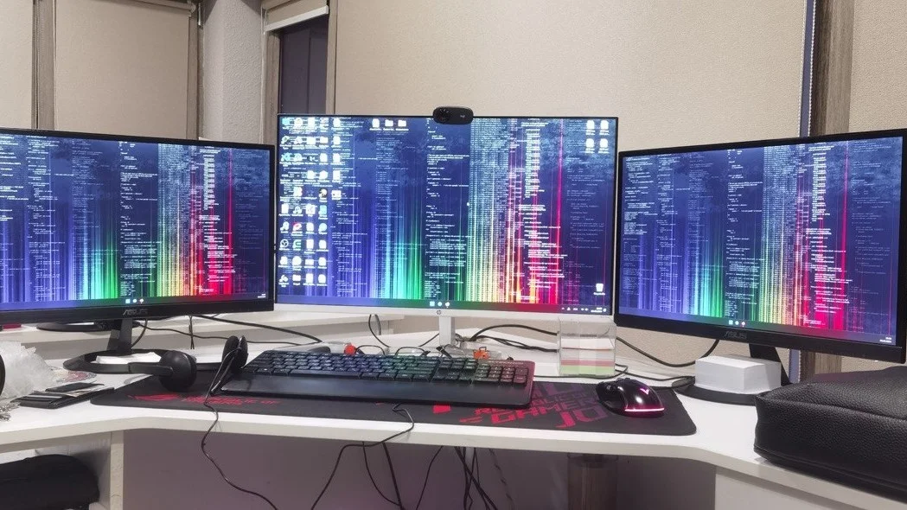
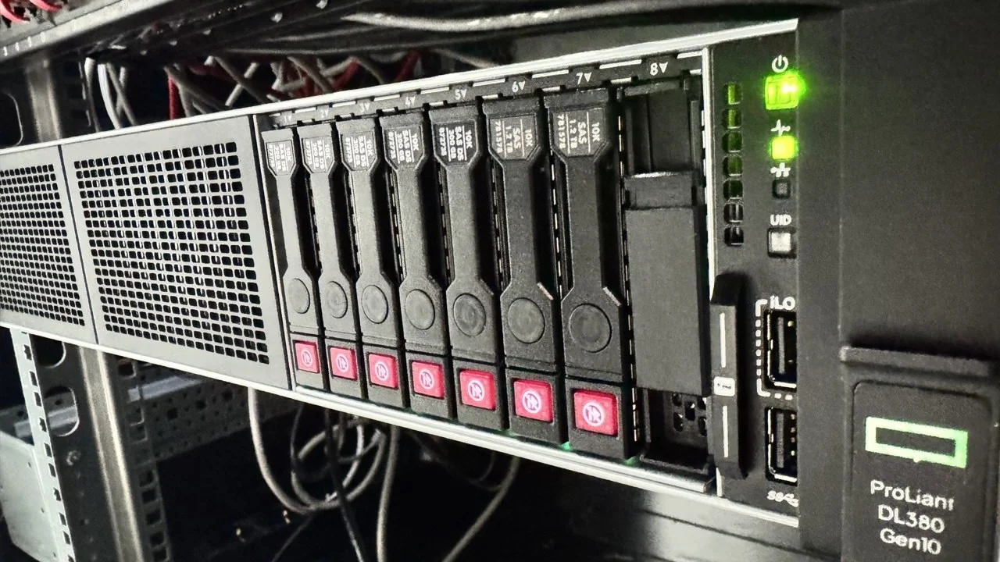
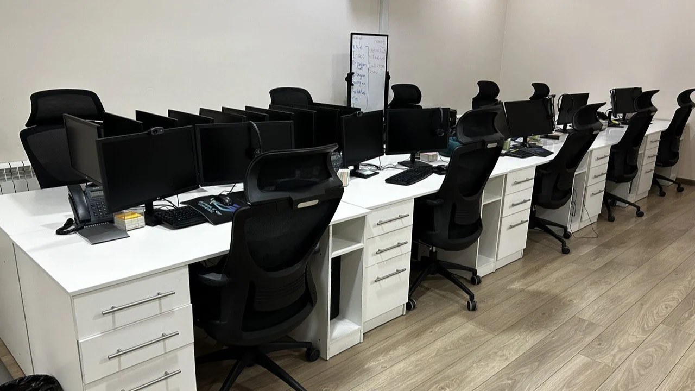
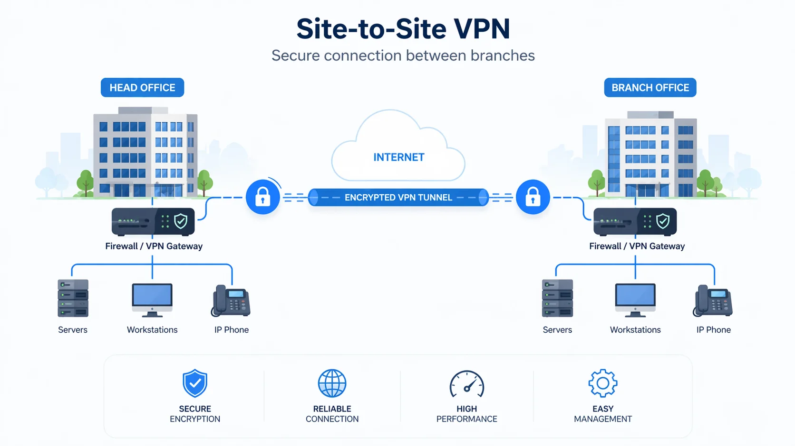
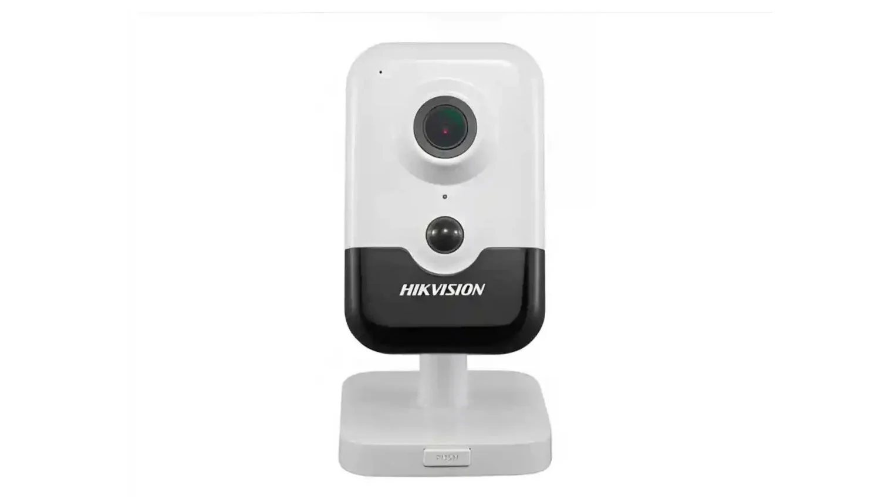

IT-услуги в Ташкенте: support, audit и порядок
Закрываем ежедневные ИТ-проблемы, держим инфраструктуру под контролем и наводим технический порядок для бизнеса.
ПодробнееСерверы, сети, backup, мониторинг и безопасность для бизнеса без лишнего технического шума.
Реальные проблемы, практические решения и полезные материалы для бизнеса: камеры, аудит, сеть, серверы, безопасность, телефония и другие направления.

Закрываем ежедневные ИТ-проблемы, держим инфраструктуру под контролем и наводим технический порядок для бизнеса.
Подробнее
Продумываем расположение камер, архив, просмотр с телефона и стабильную работу системы без слепых зон.
Подробнее
Выстраиваем офисный Wi‑Fi так, чтобы сеть держала нагрузку, не мешала работе и не разваливалась при росте команды.
Подробнее
Разбираем, где бизнесу нужен backup, что реально должно копироваться и почему без проверки восстановления резерв бесполезен.
Подробнее
Настраиваем Face ID для прохода сотрудников, учёта посещаемости и более аккуратного контроля доступа на объекте.
Подробнее
Выстраиваем телефонию для call-центра так, чтобы звонки не терялись, очереди были прозрачными, а качество работы видно по фактам.
Подробнее
Проверяем компьютеры, сеть, безопасность и процессы, а затем даём конкретные рекомендации без лишней воды.
Подробнее
Соединяем офисы и филиалы в одну защищённую сеть, чтобы сотрудники спокойно работали с общими системами и данными.
Подробнее
Показываем, где камеры реально полезны в офисе, сколько их нужно и как не испортить проект лишними точками.
Подробнее